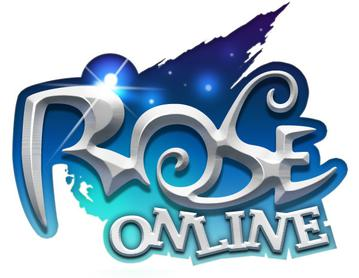
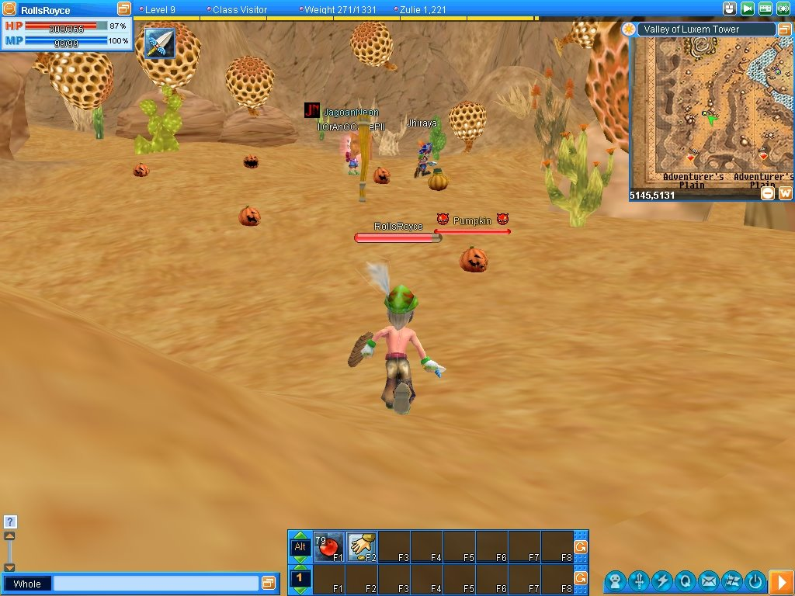

Rose Onlive Evolution !
ShinROSE is based on naRose Evolution. Many have missed it, here it is ! Coming back from its ashes
ShinROSE Evolution has unique features never seen in Rose's history.

Full keyboard gameplay added.
In ShinROSE Online Evolution, you can run with WASD, jump with Space bar, target with Tab.